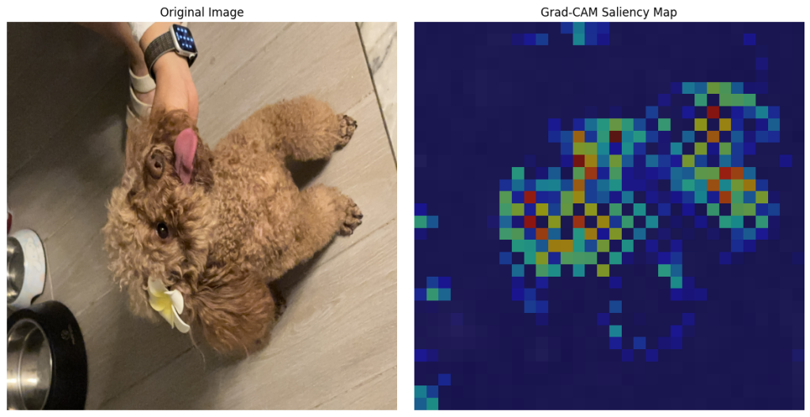

In this week’s lectures and workshops, starting from the speaker’s master’s thesis Computational Aesthetics and Ethics: Processes Between the Image’s Context, we delved deep into how AI generates images and how we can retain human judgment and creative value within algorithmic systems. This was not just a technical learning experience, but a thought-provoking challenge regarding image culture, power structures, and creative ethics.
The speaker reviewed the evolution of mainstream models from GAN and StyleGAN to Stable Diffusion, noting that while their visual expressiveness continues to improve, their foundations remain rooted in data-driven imitative structures. AI does not “understand” images; it performs statistical inference based on the datasets it was trained on.
This was particularly evident in the speaker’s showcase of image recognition errors: AI identified protest photos from apartheid-era Africa as “men standing on grass,” and misclassified images of social conflict as ordinary tourist scenes exposing the model’s blind spots when lacking historical context and social awareness.
In the course, the speaker proposed a three-step core logic for AI image generation:
- Dataset Curation: The process of selecting which images to use for training the model.
- Parameter Tweaking: Defining “style and possibility” through code configurations.
- Curation: Selecting which generated images to keep or discard from countless outputs.
Although these steps appear technical, each embodies human aesthetic preferences and value judgments. The speaker emphasized: We aren’t competing with AI for creativity, but redefining “what constitutes creation” through AI.
The course introduced many philosophical and cultural theoretical reflections, especially the inquiry into “cultural value” when we no longer emphasize “this is generated by AI,” does the image itself still hold meaning? This question deeply resonated with me.
The speaker pointed out that many current AI artworks rely on “novelty” (such as AI-generated movies, photos, news), but once the technology becomes popular, how will we distinguish between “truly meaningful” creations and “technology-driven appearances”? Cultural value cannot be defined by AI, but is endowed by humans through context, experience, and choice.”
One thing that particularly inspired me is: “Don’t be dominated by prompts, but modify model parameters, understand data sources, and build your own system logic.” This approach carries deeper creative depth and responsibility than simply inputting a sentence to generate images.
I was also alerted by the course’s final mention of “aesthetic fatigue in generative systems”: if we don’t keep asking “what are we producing? Why are we producing it?” creativity may fall into the trap of mechanical repetition regardless of the tools used.
In the second half of the course, we manually ran Grad-CAM (Gradient-weighted Class Activation Mapping) code in Google Colab to generate visualization heatmaps of attention regions for deep learning image classification models.

The left image shows the uploaded photo (a puppy), and the right is the saliency map generated by Grad-CAM. It clearly indicates that the model focuses attention on the dog’s face, tongue, and other regions. Such heatmaps help us determine which parts of the image the model “prioritizes” during classification.
It can also generate video: